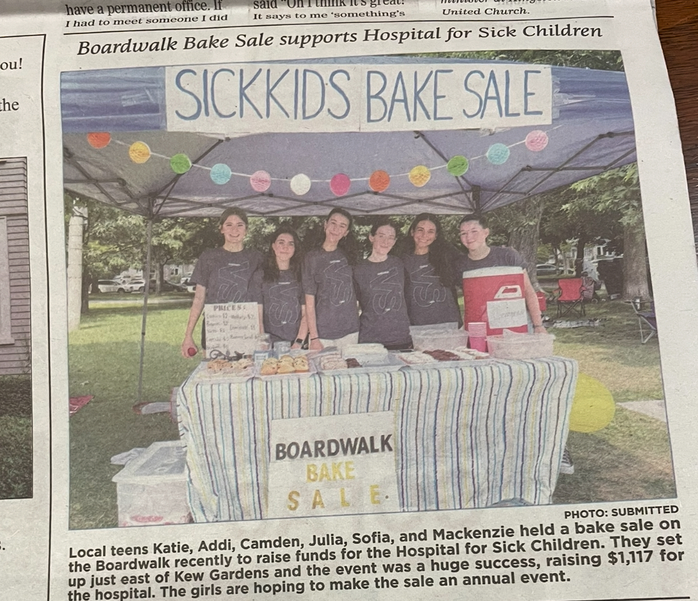
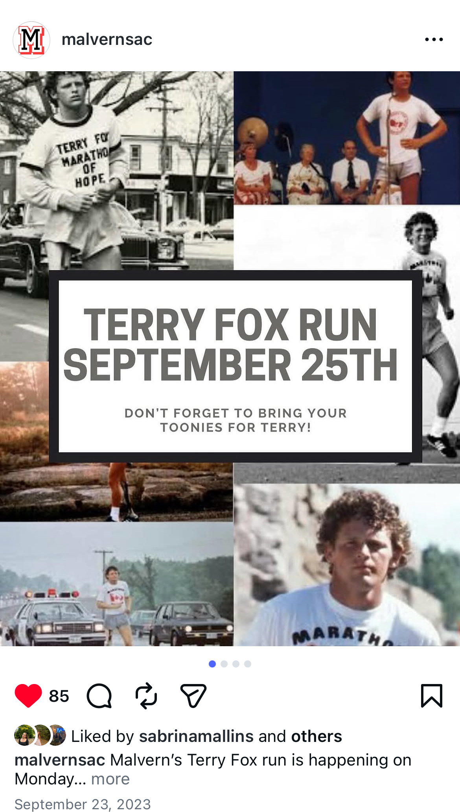

Position Statement

My name is Katie Di Gregorio. I am a first-year Engineering Science student at the University of Toronto and a proud member of the varsity women's volleyball team. Since I was young, my goal has been remarkably simple: to make a positive difference in the world. While I wasn't always sure exactly how I would achieve this, I have always trusted that God has a bright future in store for me and that I will follow the path He guides me along.
In high school, I envisioned making an impact through one-on-one patient care as a doctor, demonstrating my commitment to healthcare by leading initiatives like a SickKids Bake Sale and serving as Student Council President for our Terry Fox Run. However, in grade 12, my perspective broadened. I realized I could impact lives on a global scale, and engineering offered the platform to do so. My ultimate goal is to leverage my undergraduate education to develop large-scale biomedical products that improve lives worldwide.


The Evolution of My Position
Before coming to UofT, I mistakenly believed that engineering simply meant turning an idea into reality with minimal planning. I was entirely focused on the final outcome and unaware of the rigorous process required to get there. I relied heavily on my own intuition rather than data, jumped to conclusions, and rushed into execution without a structured plan.
Through Praxis I, this perception was completely transformed—but I swung to the opposite extreme. For example, during the Hand-Held Broom optimization, my initial instinct was to rush into building my favored suction-cup concept [5]. When my team utilized the Lotus Blossom technique, it opened my eyes to the value of divergence, but it also triggered an over-correction into analysis paralysis. I generated so many concepts that I experienced "idea bloat" [4]. I hesitated to make concrete design decisions, feeling paralyzed by the belief that more research was always needed before acting.
Now, having completed Praxis II, I have struck a balance. I learned to break my analysis paralysis by embracing rapid physical prototyping. For the Automated Wristband Applicator, instead of getting stuck in theory, we built low-fidelity cardboard models to test our mechanisms [11]. This "bias toward action" allowed us to quickly identify friction points, gather verified empirical data (like achieving a 10.33-second application time) [11], and present a justified, stakeholder-focused solution to the Balmy Beach Day Care. While my core values—teamwork, communication, integrity, and courage—have remained steadfast, my approach has evolved into a structured, highly analytical practice.
Current Practice: A Volleyball Season
I chose to evolve my design metaphor from a single "timeout" to an entire volleyball season because my understanding of engineering has profoundly expanded. Previously, my design philosophy functioned strictly as a timeout—a necessary pause heavily focused on cautious planning, reflection, and stepping back to analyze. While that reflection remains critical, my experiences in Praxis II taught me that engineering is a marathon, not a moment. It is a complex, multi-phased journey that demands relentless, sustained effort. A timeout is only a fraction of the game; the true essence of design lies in stepping back onto the court. I now recognize that a mature engineering practice requires a bias toward action—having the courage to physically build, execute, and actively do, even when navigating deep uncertainty and confusion.
The Pre-Season (Framing)
At the start of a volleyball season, excitement is high, possibilities are endless, and we establish our team norms and goals. The foundation we build here dictates the success of the entire season. I now understand that engineering design demands the same rigorous foundation, which begins with strong framing.
Even minor adjustments to the framing of a problem can drastically alter a project's scope. For instance, in our Praxis II project, maintaining a requirement like "full automation" significantly increased complexity and forced us to carefully weigh constraints and trade-offs [11]. Because of this, I prioritize extensive early-stage research to thoroughly understand a problem before committing to a solution. I no longer view framing as a preliminary step, but as the most critical, ongoing phase of the design process.
Practice (Preparation & Teamwork)
Before stepping onto the court for a weekend game, hours of unseen preparation occur. We hold game-plan meetings, practice relentlessly, and analyze our opponents' strengths and weaknesses. Similarly, before I begin diverging in a design project, I conduct rigorous primary and secondary research to deeply understand the opportunity landscape.
— Mark Heese, Assistant Coach (Olympic Beach Volleyball Medalist) [11]
None of this preparation matters without a unified front. Volleyball demands constant communication and mutual trust; leadership means doing my part while empowering others to do theirs. I apply this directly to my design teams. I actively monitor group dynamics, address conflicts early, and foster an environment where everyone feels comfortable contributing. Trust is not a byproduct of teamwork; it is a prerequisite for it.
The Game (Diverging & Representing)
My relationship with planning has fluctuated. Before university, I barely planned. After Praxis I, I over-planned to the point of hesitation. Today, I understand that there is a moment where you simply have to jump in. In our locker room, a painted quote reminds us: "You are as ready as you need to be right now." In engineering, this is the essence of diverging. I generate ideas freely, no matter how unconventional.
During a game, we are told to stick to our formula. In design, my "formula" consists of Needs, Goals, Objectives (NGOs), requirements, and evaluation criteria. Guided by this framework, I lean heavily into my visual and creative strengths. I use sketching and physical prototyping to represent my ideas. When it is time to execute, overthinking must stop, and building must begin.
The Timeout (Converging & Reflecting)
Once a concept is formed, my process becomes highly iterative. Translating user needs into measurable metrics allows me to evaluate concepts using tools like Pugh charts, ensuring decisions are driven by evidence rather than intuition.
After converging on an idea, it is crucial to step back. Just as my coach calls a timeout to reground the team, I pause to evaluate our design against the established requirements. This reflection often reveals better pathways, sending me back into divergence. It is the practice of stepping back in order to move forward.
— Kristine Drakich, Head Coach of UofT Women's Volleyball [12]
Mistakes will happen. A failed prototype is not incompetence; it is data. While I cannot control stakeholder needs or unforeseen failures, I can control how I frame opportunities and respond to feedback.
This resilience is deeply rooted in my faith. In high-pressure moments, my faith reminds me that design is a long, uncertain journey. Fixating solely on the final outcome obscures the learning process. I choose to value the journey, remain grateful for the opportunity to learn and create, and to persist without fear.
The Off-Season (Iteration & Continuous Growth)
This year, my team’s season ended in a heartbreaking quarter-final loss. But on Monday, we were back in the gym. The season may have ended, but the work hadn't. Engineering design is much the same: it is never truly finished. A design can always be optimized, refined, and expanded. There is always room to grow, which is why I am eager to continue developing a functioning wristband applicator for Balmy Beach Day Care.
Evaluation & FDCR Alignment
My "Volleyball Season" philosophy maps closely to the Framing, Diverging, Converging, and Representing (FDCR) model, but I experience it as a highly fluid, non-linear cycle. My process involves:
- Investing heavily in framing and reframing upfront.
- Moving fluidly into divergence to explore possibilities without hesitation.
- Relying heavily on physical models and sketching to visualize and test concepts (Representing).
- Converging on decisions based on metrics, then taking a step back to evaluate and often diverge again.
Prototyping often uncovers gaps that require reframing the problem entirely. This non-linearity reflects the reality of engineering design: progress is rarely a straight line, and intentional iteration is the key to meaningful impact.
Summary Of Positions
Outcome-Focused & Intuitive
I believed engineering design was simply the act of making products that impact the world. I was entirely focused on the final outcome and unaware of the rigorous process required to get there. I relied heavily on my own intuition rather than data, jumped to conclusions, and rushed into execution without a structured plan.
Over-planned & Hesitant
After my first semester, I swung to the opposite extreme. I realized design was highly iterative and required extensive framing. However, I prioritized planning and divergence to a fault. I often hesitated to make concrete design decisions, feeling paralyzed by the belief that more research was always needed before acting.
Balanced & Non-Linear
I now understand engineering design as a fluid process that integrates Framing, Diverging, Converging, and Representing. I have struck a balance: rigorous framing is essential, but at a certain point, I must boldly jump in and build. I am comfortable converging on an idea knowing I can always loop back to divergence.
What stayed the same
My core motivation. My ultimate goal—to make a meaningful, positive difference in the world—has never wavered. Working closely with communities during Praxis II grounded me in this fundamental "why," reminding me that the purpose of this complex process is human impact.
What changed
My understanding of the how. I transitioned from relying on unchecked intuition, to being paralyzed by research, to confidently navigating a complex, structured, yet highly adaptable design process to turn that initial desire for impact into a justified reality.